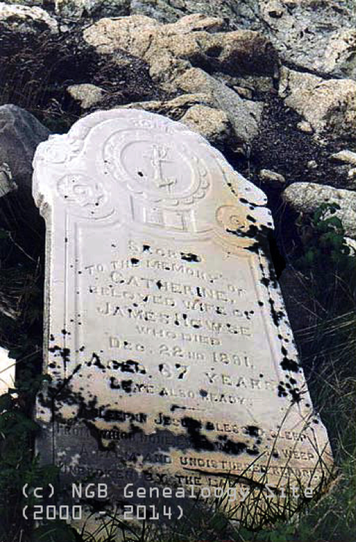

-1-MasterItem.svg)
Stories of Westminster United Church & its People / Page
101
Cabot was followed by Sir Humphrey Gilbert in 1583 on the authority of Queen
Elizabeth. It was he
who who established the first overseas British colony. In that colony the first
court of Justice in North
America was established by Sir Richard Whitbourne in 1615. Beyond those early
activities
settlement in the colony proceeded slowly.
Ships in NFLD waters could not have missed the teaming schools of cod and other
fish just waiting
to be caught. The British fishing industry knew the economic potential of the
area and didn’t want
competition which would surely happen if a burgeoning colony with a local
fishing industry were
established on the Island.
To obviate this happening they devised a policy which decreed that the captains
of British fishing
vessels were not allowed to leave any sailors or passengers behind on the
Island. But practise doesn’t
always follow policy and the colony did grow by one means or another and fishing
became the
industry and life-blood of that colony and of Cabot’s new, found land.
An early mention of the Howse family in NFLD place them on Gooseberry
Island, a small community north-west of Bonavista, with fewer than a dozen
families, established around 1860-70.
The family were fishermen and ship builders; ship builders because you
didn’t have the money to buy a boat. You built your boat. Ernest, in his
autobiography Roses in December, describes the hours, days, weeks, months
of labor to fashion such a ship.
Ernest says “My father and his brothers built their schooner, in two years.”
Cutting trees (on the mainland of Labrador) out of the forest, to be sawn
into planks. Cutting pine trees from along the coast for masts.
(
Video of men sawing planks from trees exactly as Ernest
describes the Howse family doing in their day.)
Table
of Contents
Rev. Ernest Marshall Howse

Above: the gravestone of Catherine Howse
in the Gooseberry cemetery. She was Ernest’s grandmother.
She died 1891.